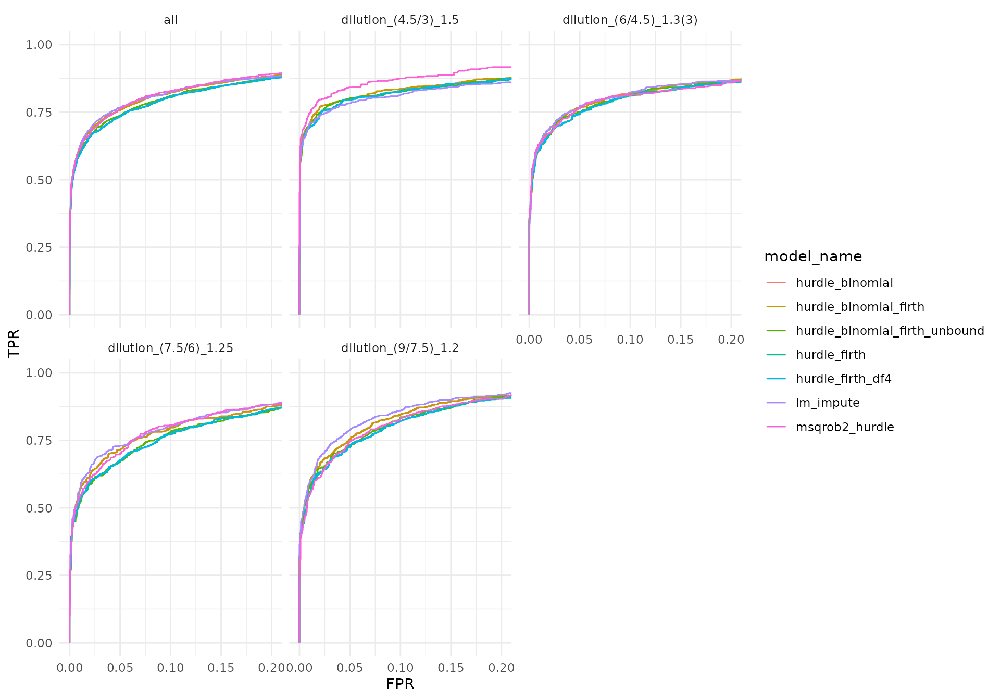
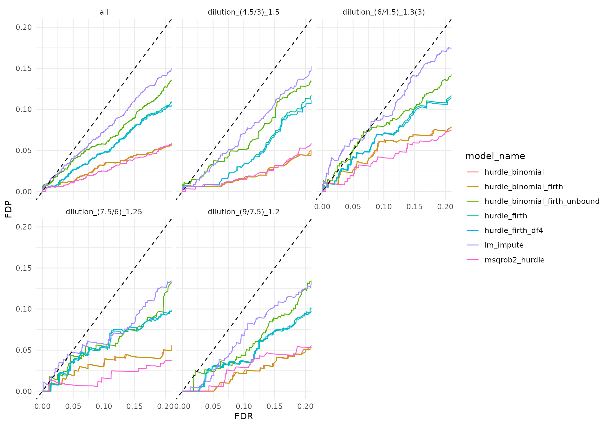

vignettes/Benchmark_hurdle.Rmd
Benchmark_hurdle.Rmdprolfqua::ContrastsHurdleFacade joins an intensity
contrast and a detection contrast and combines their p-values with
Fisher’s method, as msqrob2’s hurdle model does. We benchmark on the
IonStar MaxQuant peptides:
lm_impute: intensity onlyhurdle_firth: lm_impute +
firth_nested
hurdle_binomial: lm_impute +
binomial_nested
hurdle_binomial_firth: lm_impute +
binomial_firth_nested
hurdle_binomial_firth_unbound: as
hurdle_binomial_firth, without the lower bound of one on
the posterior dispersionhurdle_firth_df4: as hurdle_firth, but the
detection p-value also enters for fully detected proteins (msqrob2’s
rule)msqrob2_hurdle: msqrob2 msqrobHurdle() +
hypothesisTestHurdle(), Fisher p-valuediff and statistic come from
lm_impute in all prolfqua hurdle variants, so these differ
from lm_impute only in p.value and
FDR. The comparison therefore uses the signed p-value score
scaled.p_value and FDR vs FDP.
ionstar_ground_truth <- list(
id_column = "protein_id",
positive = list(label = "ECOLI", pattern = "ECOLI"),
negative = list(label = "HUMAN", pattern = "HUMAN")
)
ionstar_contrasts <- c(
"dilution_(9/7.5)_1.2" = "dilution.e - dilution.d",
"dilution_(7.5/6)_1.25" = "dilution.d - dilution.c",
"dilution_(6/4.5)_1.3(3)" = "dilution.c - dilution.b",
"dilution_(4.5/3)_1.5" = "dilution.b - dilution.a"
)
datadir <- file.path(find.package("prolfquadata"), "quantdata")
inputMQfile <- file.path(datadir, "MAXQuant_IonStar2018_PXD003881.zip")
inputAnnotation <- file.path(datadir, "annotation_Ionstar2018_PXD003881.xlsx")Same preprocessing as in the Benchmark_prolfqua and
Benchmark_msqrob2 vignettes: decoys and contaminants
removed, proteins with at least two peptides, log2 and robust scaling on
the human proteins, median polish to protein level.
mqdata <- list()
mqdata$data <- prolfquapp::tidyMQ_Peptides(inputMQfile)
mqdata$config <- create_mq_peptide_config()
annotation <- readxl::read_xlsx(inputAnnotation)
res <- dplyr::inner_join(mqdata$data, annotation, by = "raw.file")
mqdata$config$factors[["dilution."]] <- "sample"
mqdata$config$factors[["run_Id"]] <- "run_ID"
mqdata$config$factor_depth <- 1
mqdata$data <- prolfqua::setup_analysis(res, mqdata$config)
lfqdata_mq <- prolfqua::LFQData$new(mqdata$data, mqdata$config)
lfqdata_mq$set_data(lfqdata_mq$data_long() |> dplyr::filter(!grepl("^REV__|^CON__", protein_Id)))
lfqdata_mq$filter_proteins_by_peptide_count()
lfqdata_mq$remove_small_intensities()
tr <- lfqdata_mq$get_Transformer()
subset_h <- lfqdata_mq$get_copy()
subset_h$set_data(subset_h$data_long() |> dplyr::filter(grepl("HUMAN", protein_Id)))
subset_h <- subset_h$get_Transformer()$log2()$lfq
lfqdataNorm_mq <- tr$log2()$robscale_subset(lfqsubset = subset_h)$lfq
agg_mq <- lfqdataNorm_mq$get_Aggregator()
agg_mq$aggregate()
lfqProt_mq <- agg_mq$lfq_aggThe intensity model is fitted to the protein intensities; the detection models to the peptide-level detection pattern.
fa_lm_impute <- prolfqua::build_contrast_analysis(
lfqProt_mq, "~ dilution.", ionstar_contrasts, method = "lm_impute")
fa_firth <- prolfqua::build_contrast_analysis(
lfqdataNorm_mq, "~ dilution.", ionstar_contrasts, method = "firth_nested")
fa_binomial <- prolfqua::build_contrast_analysis(
lfqdataNorm_mq, "~ dilution.", ionstar_contrasts, method = "binomial_nested")
fa_binomial_firth <- prolfqua::build_contrast_analysis(
lfqdataNorm_mq, "~ dilution.", ionstar_contrasts, method = "binomial_firth_nested")
fa_binomial_firth_unbound <- prolfqua::build_contrast_analysis(
lfqdataNorm_mq, "~ dilution.", ionstar_contrasts, method = "binomial_firth_nested",
binomial_bound = FALSE)The human proteins do not change between dilutions, so about 5% of
their detection p-values should fall below 0.05. Proteins detected in
every sample are left out. firth_nested fits one 0/1 row
per peptide and sample, so its information grows with the number of
peptides. The count models sum the peptides per sample and estimate the
dispersion from the samples.
completed <- lfqdataNorm_mq$get_copy()
completed$complete_cases()
n_peptides <- completed$data_long() |>
dplyr::group_by(protein_Id) |>
dplyr::summarise(
n_peptides = dplyr::n_distinct(peptide_Id),
missing = anyNA(.data[[completed$response()]]),
.groups = "drop") |>
dplyr::filter(missing)
detection <- list(
firth_nested = fa_firth,
binomial_nested = fa_binomial,
binomial_firth_nested = fa_binomial_firth,
binomial_firth_nested_unbound = fa_binomial_firth_unbound
)
dplyr::bind_rows(lapply(names(detection), function(name) {
dplyr::mutate(dplyr::ungroup(detection[[name]]$get_contrasts()), model = name)
})) |>
dplyr::filter(grepl("HUMAN", protein_Id)) |>
dplyr::inner_join(n_peptides, by = "protein_Id") |>
dplyr::mutate(peptides = cut(
n_peptides, c(0, 1, 3, 5, 10, 20, Inf),
labels = c("1", "2-3", "4-5", "6-10", "11-20", ">20"))) |>
dplyr::group_by(model, peptides) |>
dplyr::summarise(p_below_0.05 = mean(p.value < 0.05, na.rm = TRUE), .groups = "drop") |>
tidyr::pivot_wider(names_from = "model", values_from = "p_below_0.05") |>
knitr::kable(digits = 3, caption = "Share of human protein detection p-values below 0.05, by number of peptides.")| peptides | binomial_firth_nested | binomial_firth_nested_unbound | binomial_nested | firth_nested |
|---|---|---|---|---|
| 1 | 0.000 | 0.018 | 0.000 | 0.000 |
| 2-3 | 0.003 | 0.038 | 0.003 | 0.013 |
| 4-5 | 0.005 | 0.040 | 0.004 | 0.025 |
| 6-10 | 0.005 | 0.047 | 0.005 | 0.036 |
| 11-20 | 0.005 | 0.040 | 0.005 | 0.056 |
| >20 | 0.001 | 0.054 | 0.001 | 0.077 |
hurdle_firth <- prolfqua::ContrastsHurdleFacade$new(fa_lm_impute, fa_firth)$get_contrasts()
hurdle_binomial <- prolfqua::ContrastsHurdleFacade$new(fa_lm_impute, fa_binomial)$get_contrasts()
hurdle_binomial_firth <- prolfqua::ContrastsHurdleFacade$new(fa_lm_impute, fa_binomial_firth)$get_contrasts()
hurdle_binomial_firth_unbound <- prolfqua::ContrastsHurdleFacade$new(
fa_lm_impute, fa_binomial_firth_unbound)$get_contrasts()
hurdle_firth |>
dplyr::count(contrast, hurdle_components) |>
tidyr::pivot_wider(names_from = "hurdle_components", values_from = "n") |>
knitr::kable(caption = "Rows per contrast by the p-values that were combined (hurdle_firth).")| contrast | both | intensity |
|---|---|---|
| dilution_(4.5/3)_1.5 | 3950 | 228 |
| dilution_(6/4.5)_1.3(3) | 3950 | 228 |
| dilution_(7.5/6)_1.25 | 3950 | 228 |
| dilution_(9/7.5)_1.2 | 3950 | 228 |
intensity rows are proteins detected in every sample,
for which the detection p-value is left out, and proteins without a
detection estimate. msqrob2 always combines both p-values when both
exist. hurdle_firth_df4 applies that rule to the component
p-values of hurdle_firth.
fisher_always <- function(hurdle) {
log_p <- cbind(log(hurdle$p.value.intensity), log(hurdle$p.value.detection))
n_components <- rowSums(!is.na(log_p))
chisq <- -2 * rowSums(log_p, na.rm = TRUE)
hurdle$p.value <- ifelse(
n_components > 0,
stats::pchisq(chisq, 2 * n_components, lower.tail = FALSE),
NA_real_
)
dplyr::ungroup(prolfqua::adjust_p_values(hurdle))
}
hurdle_firth_df4 <- fisher_always(hurdle_firth)msqrob2 aggregates the same normalized peptides with median polish
and fits rlm to the intensities and a quasibinomial
glm to the peptide counts. diff and
statistic come from the intensity component, or from the
count component for proteins without an intensity estimate;
p.value and FDR are msqrob2’s Fisher p-value
and its BH adjustment.
library(QFeatures)
library(msqrob2)
my_medianPolish <- function(x, verbose = FALSE, ...) {
medpol <- stats::medpolish(x, na.rm = TRUE, trace.iter = verbose, maxiter = 10)
medpol$overall + medpol$col
}
L <- makeContrast(
c("dilution.e-dilution.d=0",
"dilution.d-dilution.c=0",
"dilution.c-dilution.b=0",
"dilution.b=0"),
parameterNames = c("dilution.e", "dilution.d", "dilution.c", "dilution.b"))
contrast_map <- stats::setNames(names(ionstar_contrasts), paste0("hurdle_", colnames(L)))
se <- prolfqua::LFQDataToSummarizedExperiment(lfqdata = lfqdataNorm_mq)
pe <- QFeatures::QFeatures(list(peptide = se), colData = colData(se))
pe <- QFeatures::aggregateFeatures(
pe, i = "peptide", fcol = "protein_Id", name = "protein", fun = my_medianPolish)## | | | 0%## | |======================================================================| 100%
pe <- msqrobHurdle(pe, i = "protein", formula = ~dilution., overwrite = TRUE)
pe <- hypothesisTestHurdle(pe, i = "protein", L, overwrite = TRUE)
row_data <- rowData(pe[["protein"]])
msqrob2_hurdle <- dplyr::bind_rows(lapply(names(contrast_map), function(column) {
prolfqua::matrix_to_tibble(row_data[[column]], preserve_row_names = "protein_Id") |>
dplyr::mutate(contrast = contrast_map[[column]])
})) |>
dplyr::transmute(
protein_Id = .data$protein_Id,
contrast = .data$contrast,
diff = dplyr::coalesce(.data$logFC, .data$logOR),
statistic = dplyr::coalesce(.data$logFCt, .data$logORt),
p.value = .data$fisherPval,
FDR = .data$fisherAdjPval
)Each method is scored on its own protein × contrast rows;
n_total gives their number.
bench <- function(data, method, description) {
res <- write_contrast_results(
data,
path = file.path(tempdir(), paste0("hurdle_IonStar_MQ_", method)),
metadata = list(
dataset = "IonStar_MaxQuant",
method = method,
method_description = description,
input_file = "MAXQuant_IonStar2018_PXD003881.zip/peptides.txt",
software_version = paste0("prolfqua ", packageVersion("prolfqua")),
date = as.character(Sys.Date()),
ground_truth = ionstar_ground_truth))
benchmark_from_result(res)
}
benchmarks <- list(
bench(fa_lm_impute$get_contrasts(), "lm_impute", "lm_impute, intensity only"),
bench(hurdle_firth, "hurdle_firth", "lm_impute + firth_nested, Fisher"),
bench(hurdle_binomial, "hurdle_binomial", "lm_impute + binomial_nested, Fisher"),
bench(hurdle_binomial_firth, "hurdle_binomial_firth", "lm_impute + binomial_firth_nested, Fisher"),
bench(hurdle_binomial_firth_unbound, "hurdle_binomial_firth_unbound",
"lm_impute + binomial_firth_nested without dispersion bound, Fisher"),
bench(hurdle_firth_df4, "hurdle_firth_df4", "lm_impute + firth_nested, Fisher, msqrob2 rule")
)
if (evalMsqrob2) {
benchmarks <- c(benchmarks, list(bench(msqrob2_hurdle, "msqrob2_hurdle", "msqrob2 hurdle, Fisher")))
}
dplyr::bind_rows(lapply(benchmarks, function(b) b$summary_metrics())) |>
dplyr::filter(.data$score == "scaled.p_value") |>
knitr::kable(digits = 3, caption = "Geometric mean over contrasts of AUC, partial AUC and average precision for scaled.p_value.")| model_name | score | AUC | pAUC_10 | pAUC_20 | AP | pAP_50 | pAP_80 | n_total |
|---|---|---|---|---|---|---|---|---|
| lm_impute | scaled.p_value | 92.766 | 73.759 | 79.930 | 83.679 | 98.774 | 94.417 | 4178 |
| hurdle_firth | scaled.p_value | 92.012 | 70.851 | 77.730 | 81.953 | 98.563 | 92.806 | 4178 |
| hurdle_binomial | scaled.p_value | 92.423 | 73.279 | 79.615 | 83.377 | 98.648 | 94.085 | 4178 |
| hurdle_binomial_firth | scaled.p_value | 92.420 | 73.255 | 79.589 | 83.359 | 98.648 | 94.068 | 4178 |
| hurdle_binomial_firth_unbound | scaled.p_value | 92.018 | 71.406 | 78.178 | 82.268 | 98.592 | 93.106 | 4178 |
| hurdle_firth_df4 | scaled.p_value | 92.026 | 70.842 | 77.789 | 81.957 | 98.471 | 92.752 | 4178 |
| msqrob2_hurdle | scaled.p_value | 92.842 | 73.354 | 79.959 | 83.606 | 98.614 | 93.792 | 4178 |
roc <- dplyr::bind_rows(lapply(benchmarks, function(b) b$get_confusion_benchmark())) |>
dplyr::filter(.data$what == "scaled.p_value")
ggplot2::ggplot(roc, ggplot2::aes(x = .data$FPR, y = .data$TPR, color = .data$model_name)) +
ggplot2::geom_line() +
ggplot2::facet_wrap(~contrast) +
ggplot2::coord_cartesian(xlim = c(0, 0.2)) +
ggplot2::theme_minimal()
ROC curves for scaled.p_value up to 20% FPR.
fdp <- dplyr::bind_rows(lapply(benchmarks, function(b) b$get_confusion_FDRvsFDP()))
ggplot2::ggplot(fdp, ggplot2::aes(x = .data$scorecol, y = .data$FDP, color = .data$model_name)) +
ggplot2::geom_line() +
ggplot2::geom_abline(linetype = "dashed") +
ggplot2::facet_wrap(~contrast) +
ggplot2::coord_cartesian(xlim = c(0, 0.2), ylim = c(0, 0.2)) +
ggplot2::labs(x = "FDR", y = "FDP") +
ggplot2::theme_minimal()
False discovery proportion against the nominal FDR; the diagonal marks perfect calibration.
dplyr::bind_rows(lapply(benchmarks, function(b) b$calibration_metrics())) |>
dplyr::filter(.data$contrast == "average") |>
knitr::kable(digits = 3, caption = "FDR calibration for FDR <= 0.2, averaged over contrasts: mean absolute and mean signed deviation of FDP from FDR.")| model_name | contrast | score | FDP_cal | FDP_bias |
|---|---|---|---|---|
| lm_impute | average | p_value_adjusted | 0.014 | -0.010 |
| hurdle_firth | average | p_value_adjusted | 0.023 | -0.022 |
| hurdle_binomial | average | p_value_adjusted | 0.030 | -0.029 |
| hurdle_binomial_firth | average | p_value_adjusted | 0.029 | -0.028 |
| hurdle_binomial_firth_unbound | average | p_value_adjusted | 0.019 | -0.017 |
| hurdle_firth_df4 | average | p_value_adjusted | 0.023 | -0.023 |
| msqrob2_hurdle | average | p_value_adjusted | 0.033 | -0.033 |